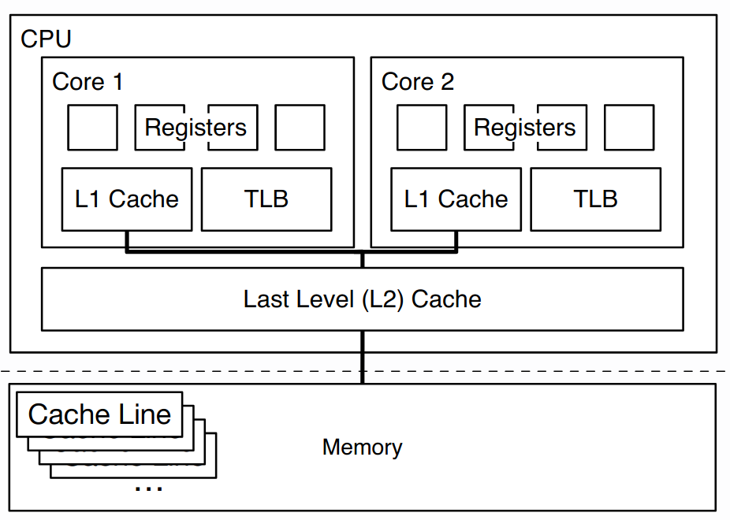
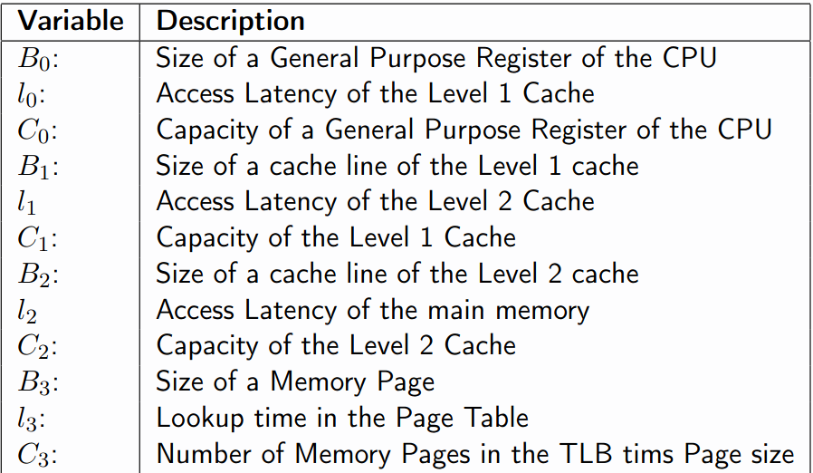
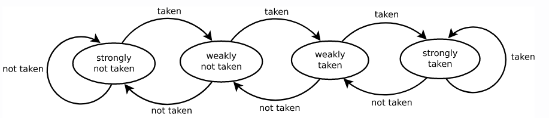

Lecture 3: Performance Modeling
This lecture is about coming up with analytical models for measuring performance. The primary reason for modeling is when we want to learn about a system's performance "on the cheap", ie: without running the software.
This is useful for when we may need to predict how much we may be charged for the execution of software (cloud services), to know how many resources we need to provision a system, etc.
Assumptions:
-
The input data follows a known distribution (usually uniform without correlation).
-
We ignore system noise (caused by scheduling, external factors, etc.).
-
We will model single-threaded deterministic code.
Under these assumptions, there are two approaches to modeling:
-
Numerical/Experimental Model: we run the system, acquire a series of datapoints and come up with a predictive model.
-
Analytical Model: a formal characterisation of relationship between parameters and performance metrics, often expressed as an equation.
Numerical Models
The first step is to gather data. We do this through microbenchmarks, a small specially designed program used to test to performance behaviour of that small portion of the system.
Throughout the lecture we will consider the following microbenchmark which tests the memory subsystem access performance:
extern int* input;
extern size_t N; // some large constant
extern size_t stride; // the parameter of our experiment
int sum = 0;
for (size_t i = 0; i < N; i += stride) {
sum += input[stride];
}
The next step is to interpret the results of the microbenchmark. A common interpretation technique is interpolation, where we draw a graph based on the datapoints we collected. It is not usually very accurate, but it is easy for humans to understand.
Advantages:
- Easy to get (if the system is available to run)
- Based on ground truth (this is actual measured behaviour)
- Easy to interpret
Disadvantages:
- They generalise poorly (cannot easily be applied to new environments, such as more CPUs, more memory, etc.)
- Massive amounts of experimental data needed for high-dimensinal parameter spaces
- Limited accuracy and prediction confidence
- Limited interpretability (contributing factors are implicit)
Analytical Models
Analytical modeling requires detailed understanding of the system (the parameters and their effects) and extensive validation.
Model fitting helps you convert empirical/numerical models into analytical models. One way to do this is through regression, which gives you an analytical linear equation describing the data.
Note that the boundary is blurry: interpolation is numerical while regression is analytical can be argued. The key difference is that analytical models are more expressive.
To obtain an analytical model, we need two components:
-
Characteristic equation: an equation that describes the behaviour of the target metric of your experiment in dependence of a varied parameter (eg:
stride). -
Values for system parameters (eg: access latency, cache capacity...)
Example 1: Building an analytical model for memory access by stride
First, we need to understand the system we are trying to model. Below is a diagram of the memory subsystem:
As such, we need to define our system parameters. For each level in the hierarchy, we have: a block size, the access latency and the capacity.
Now, we can develop a characteristic equation for the access stride experiment:
Let \( T_{mem} \) be the average time for a memory access and let \(s\) be the stride size in bytes.
\(T_{mem} = l_0 \cdot min(1, \frac{s}{B_0}) + l_1 \cdot min(1, \frac{s}{B_1}) + l_2 \cdot min(1, \frac{s}{B_2}) + l_3 \cdot min(1, \frac{s}{B_3})\)
Here, each term represents the latency to access layer \(n\) multiplied by the probability of missing layer \(n\) and going to the next layer. Naturally, the larger \(B_n\) is, there is a lower chance for missing at layer \(n\).
Example 2: Building an analytical model for random memory access
Let's model this benchmark, where we have random access into the array input2:
extern int* input1; // uniform random data
extern int* input2; // random data
int sum = 0;
for (size_t i = 0; i < inputSize; i++) {
sum += input2[input1[i]];
}
First, let us define parameters in terms of memory regions and access patterns (see section 3 of this paper).
- The length of a memory region is \((R.n)\) (ie: the number of stored "elements")
- The width of a memory region is \((R.w)\) (ie: the size of the tuple/struct in words)
- The total size of the region \(||R||\) (ie: \(n \cdot w\))
- The access pattern is \(u\) (ie: the distance between two accesses)
In addition, we can model two types of access patterns:
- \(\text{Pattern 1} \oplus \text{Pattern 2}\) is the sequential execution of both access patterns.
- \(\text{Pattern 1} \odot \text{Pattern 2}\) is the interleaved execution of both access patterns (ie: doing two access in each iteration of a loop)
If we suppose that input1 contains 1024 uniform random ints and input2 has 64 random ints, we can describe the access pattern in terms of an interleaved sequential traversal (into input1) and random access (into input2):
\(s_{trav}(R.n = 1024, R.w = 1, u = 1) \odot rr_{acc}(R.n = 64, R.w = 1, u = 1, r = 1024)\)
Here \(r\) represents the number of accesses. We have \(R.w = 1\) because we are storing integers (we assume integers are a word in size) and \(u = 1\) because our stride is 1 word.
\(s_{trav}\) represents the sequential traversal while \(rr_{acc}\) represents the repetitive random access.
We can do more interesting things, where input1 is struct:
struct record {int a; int b; int c;};
extern record* input1; // uniform random data, 1024 values
extern int* input2; // random data, 64 values
int sum = 0;
for (size_t i = 0; i < inputSize; i++) {
sum += input2[input1[i].a];
}
The access pattern description is:
\(s_{trav}(R.n = 1024, R.w = 3, u = 1) \odot rr_{acc}( R.n = 64, R.w = 1, u = 1, r = 1024)\)
From the paper, we support three different access patterns:
- Sequential traversal \(s_{trav}\): a sequential sweep over all the values in R exactly once.
- Single random traversal \(r_{trav}\): all elements are accessed exactly once but in a random order.
- Repetitive random access \(rr_{acc}\): randomly accesses \(r\) values (may be hit more than once and some may not even be hit).
Modeling stateful/dynamic systems
Some components can have a dynamic state, where each state can influence behaviour and performance. The analytical models we have seen so far are stateless.
We can use stochastical methods to model stateful systems. We will focus on Discrete Markov Chains.
A discrete Markov chain is basically a finite-state machine with transition probabilities. They have a property whereby the next state is only dependent on the previous state and a random variable.
Example: Modeling branch misprediction
Consider the following microbenchmark:
extern int* input; // uniform random ints between 0 and 100
int sum = 0;
for (size_t i = 0; i < inputSize; i++) {
if (input[i] > threshold) {
sum += input[i];
}
}
One of the factors contributing to the performance of this code is the branch misprediction rate. If threshold is set to 50, the branch predictor will be wrong more often than if it was set to <20 or >80 for example (because the data is random).
We can model branch misprediction rate using a Markov chain:
The branch predictor starts in any of the shown states, which represents the confidence of the branch predictor based on whether the branch is actually taken or not.
We can calculate the probability of it being in any state as the stationary distribution.
The branch misprediction rate is then given by:
\(( P(pred_taken) \cdot P(act_not_taken) ) + ( P(pred_not_taken) \cdot P(act_taken) )\)
As you can see from the expression above, the worst case scenario is when we are in a not taken state but the branch is actually taken, or when we are in a taken state but the branch is not actually taken.
We can model branch predictors with more states if we want to keep a deeper history of past branches and potentially get more accurate branch predictions.
Modeling can be useful because you can verify results that have been stated and you take for granted.
Tutorial exercise notes
Attach to process, run the query a few times and then select the section where there is high activity.
We get that densescan_int is the hotspot function (line 680 scan_sel(densescan, _dense) which is a macro).
We can expand the macro by running the command in section 3.3 (fetches the source file gdk_select.c, puts it through a preprocessor and expands all macros).
Running VTune now with the macro unfolded, we see the actual code which is a for loop and the difference parameters that affect performance.
The behaviour is that we have a large array and we apply some predicate to it. If the predicate holds for the value, we record the index to some output data structure.
We can now write a microbenchmark:
long long inputSize = 128 * 1024 * 1024;
static void selection(benchmark::State& state) {
auto value = state.range(0);
auto input = new int[inputSize];
std::default_random_engine generator;
std::uniform_int_distribution<int> distribution(1, 501);
auto getValue = std::bind(distribution, generator);
for (size_t i = 0; i < inputSize; i++)
input[i] = getValue();
auto output = new int[inputSize];
size_t j = 0;
for (auto _ : state) {
for (size_t i = 0; i < inputSize; i++) {
if (input[i] < value) { // check predicate with input argument
output[j++] = i; // write the index if true
}
}
benchmark::DoNotOptimize(ouput); // important!
}
benchmark::DoNotOptimize(input);
delete[] input;
}
BENCHMARK(selection)
->Arg(0*50)
->Arg(1*50)
->Arg(2*50)
...
->Arg(10*50)
This code snippet suffers from branch misprediction (the inverse parabola curve), where the performance is good during the start, worsens around the middle and then improves again towards the end.